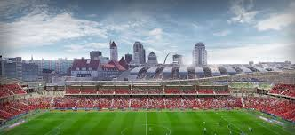

In September, officials of Gov. Parson's office met with the
MLS represetatives, to develop a proposal of a new soccer stadium in St. Louis. The 22,000 seat stadium
would be built next to Union Station, on a currently abandoned, 30 acre parking lot but currently has no
official timeline or construction plans.

Other St. Louis Sports Teams
- Blues
- Cardinals
- STLFC
- SLU Billikens
-